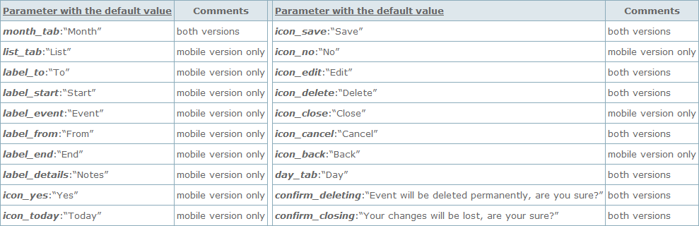
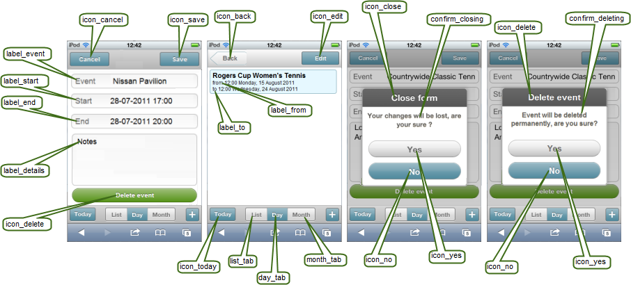

Localization
Basic principles
The mobile version as well as the desktop one allows to adapt the scheduler to a particular language and region.
The scheduler package already contains locales for most popular languages, but as the locales are basically intended to be used in the desktop version, they don't contain some mobile-specific parameters.
To localize the scheduler to some language you should know the following:
- To not define the parameters that have already been defined in one of the locales you should check the desired locale in the package. A full list of the included locales and details of how to activate the desired one you can find in the chapter 'Localization: included files'.
- All locale's parameters for the mobile version are contained in the scheduler.locale.labels object and to redefine the parameters you should 'rewrite' this object.
- For 'rewriting' you should use the technique below:
dhx.extend(scheduler.locale.labels,labels);
where labels is any object variable that contains the redefined parameters.
var labels = { icon_today : "...", ... }
Related sample: samples/07_mobile/07_locale.html
Localization parameters for mobile scheduler
The table below presents all available localization parameters for the mobile version of the scheduler. Some of them are contained in the locale files (marked as 'both versions'), but some characteristics you will need to specify yourself (marked as 'mobile version only').


Step-by-step example
Let's assume, we want to localize the mobile scheduler to Spanish. To achieve it, we will need to make the following steps:
- First, we should check the locale. The package contains one we need and we will include it:
<script src="../sources/locale_es.js" type="text/javascript" charset="utf-8"></script>
- Then, we will create an object to define the missing parameters.
var labels = { icon_today : "Hoy", list_tab : "Lista", icon_back : "Atrás", label_event:"Evento", label_start:"Сomienzo", label_end:"Аin", label_details:"Nota", label_from: "Desde", label_to: "Hasta", icon_close : "Cerrar", icon_yes : "Sí", icon_no : "No" }
- And our last step - to extend the 'scheduler.locale.labels' object with the variable defined on the previous step.
dhx.extend(scheduler.locale.labels,labels);
Related sample:samples/07_mobile/07_locale.html